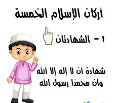

الركن الأول: الشهادتان

الركن الأول الشهادتان:
الركن الأول من أركان الإسلام هو الشهادتين وهو أن تشهد أن لا إله إلا الله وأن محمداً عبده ورسوله
ولا تعني قول الشهادة بالنطق فقط ولكن يجب إيمان القلب أنه لا يوجد إله غير الله والايمان أن سيدنا محمداً صلى الله عليه وسلم هو رسول الله، وأنه الله الواحد الاحد وأن نعبده دون أن نشرك به أحد.